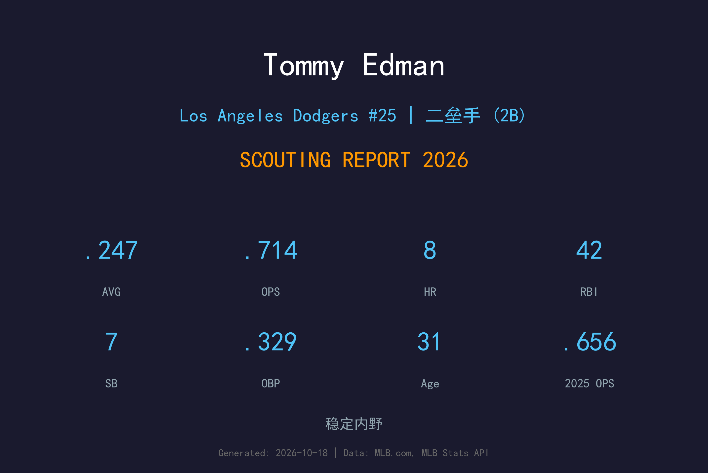
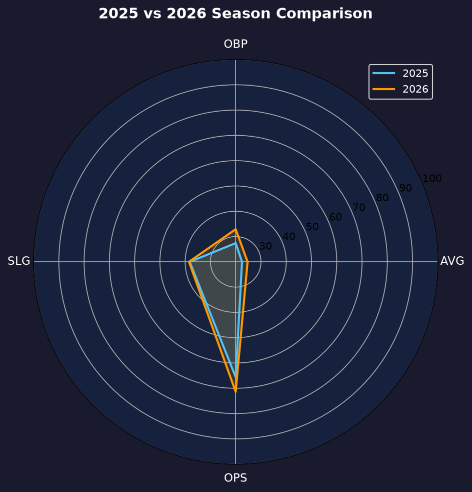
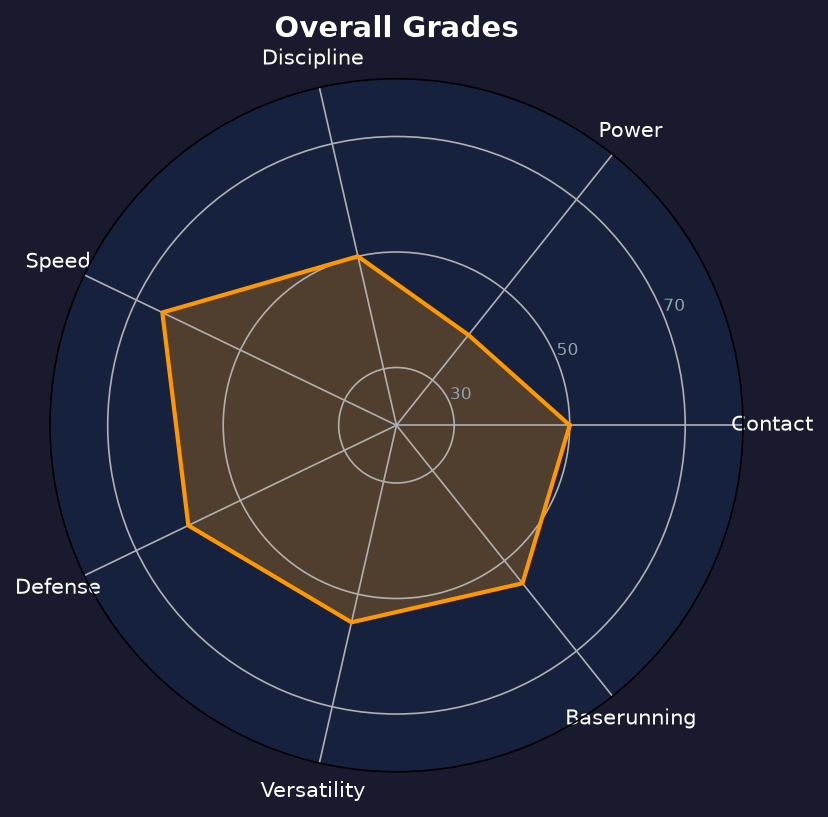

Los Angeles Dodgers #25 | 二垒手 / 超级工具人 | Switch Hitter | 万能胶

Tommy Edman 是道奇阵中最灵活的棋子——能守二垒、游击、三垒与外野，还能左右开弓，是教练团调配阵容时最有价值的工具人。
2025年他的打击一度严重衰退（.225/.274/.382），但2026年明显回稳：84场出赛缴出.247/.329/.385、OPS .714，上垒率从.274跳升.055，8轰42打点，重新证明自己是联盟平均以上的轮值主力。
31岁的 Edman 速度与守备仍是他的立足之本，跑垒智商与 multi-position 弹性让他在季后赛名单竞争中始终占有一席之地。他的存在让道奇在面对伤兵或战术调整时几乎不受阵型限制。
以顶级守备范围与稳定接球拿下国联二垒金手套，确立 elite utility 地位。
转籍韩国后代表韩国队出战 WBC 打进四强，同年缴出13轰49打点。
季中被交易至道奇，成为夺冠拼图，季后赛多次以守备与跑垒建功。

| 赛季 | G | AVG | OBP | SLG | OPS | HR | RBI | BB | SO |
|---|---|---|---|---|---|---|---|---|---|
| 2025 | 97 | .225 | .274 | .382 | .656 | 13 | 49 | 19 | 61 |
| 2026 | 84 | .247 | .329 | .385 | .714 | 8 | 42 | 22 | 67 |
Edman 从两侧打击都采用 contact-first 的紧凑挥棒，目标是快速把球打进场地。2026年他的挥棒选择明显改善：三振率20.2%虽仍偏高，但保送率6.6%较2025年回升，上垒率.329是他道奇生涯最佳。
这是他最稳定的工具。7盗垒对0次被捕盗（2026），生涯跑垒成功率长期保持高档。他的跑垒不是纯速度碾压，而是起步时机与路线判断的结晶，常能从一垒直接抢下额外的垒包。
Edman 的守备是真正的"哪里需要去哪里"：二垒、游击、三垒、左右外野都能胜任，且守备水准全部在平均以上。他的守备价值无法用单一位置的数据衡量——这正是道奇愿意给他 roster spots 的核心原因。
84场出赛、.247/.329/.385、OPS .714，是一场成功的"反弹验证"。他不再是2023年那个13轰的主力内野手，但找回了上垒能力与 multi-position 价值。唯一隐忧是长打率连续两季停在.382-.385，power 工具已经退化为 occasional pop。

守备与跑垒价值远超打击数据的超级工具人
B 级 / 精英工具人
道奇 2026 季后赛战绩：NLDS 3-1 晋级、NLCS 0-4 止步。
| G | PA | AVG | OBP | SLG | OPS | HR | RBI | BB | SO |
|---|---|---|---|---|---|---|---|---|---|
| 7 | 16 | .071 | .133 | .071 | .204 | 0 | 0 | 1 | 3 |
Tommy Edman 的2027赛季定位依旧清晰：多位置轮值、针对特定左右投的先发、以及守备与跑垒的战术价值。他的合同性价比与 positional flexibility 在道奇 depth chart 中几乎不可取代。
2026：84场、.247/.329/.385、7盗0CS——反弹验证成功，上垒率生涯道奇新高
2027：目标维持OPS .700+，争取90-100场出赛；若 power 进一步退化，可能转型纯守备型工具人
2028+：以 veteran utility 身份延续生涯，价值取决于守备衰退速度
Tommy Edman 出生于加州圣迭戈，母亲是韩国人，这让他在2023年取得韩国国籍并代表韩国队出战世界棒球经典赛，帮助球队历史性地打进四强。他就读于斯坦福大学，2016年被圣路易斯红雀选中，2019年登上大联盟。
在红雀期间，他拿下2021年国联二垒金手套，并迅速以 multi-position 能力闻名。2024年季中，他被交易至洛杉矶道奇，当季即随队夺得世界大赛冠军，完成从国联竞争者到冠军成员的跨越。
Edman 以低调、团队至上的球风著称。无论教练团把他排在哪个位置、哪个棒次，他的准备方式与比赛强度都始终如一——这也是道奇连续多年把他留在季后赛名单上的原因。